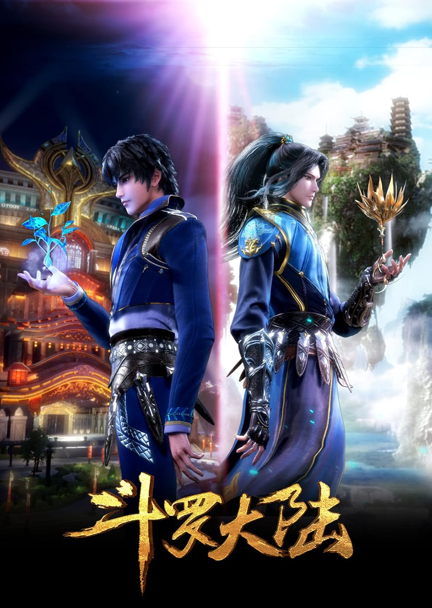

Soul Land
Something happens around episode thirty of Soul Land where you stop tracking the plot and start caring about the people. That shift is not accidental. The series spends its early episodes building a world and a set of rules with unusual patience, and by the time the Shrek Academy arc arrives, you have enough investment in Tang San and his team that their competition losses hurt and their wins feel genuinely earned rather than scripted.
The core premise puts Tang San in a strange position from the start. He carries the memories and techniques of his previous life as the greatest Tang Sect master of his generation, but in this new world, those techniques are classified as hidden weapons and are explicitly forbidden. He cannot simply be what he was. He has to rebuild within the rules of a system that would punish him for showing what he actually knows, which means every early display of ability is a carefully calculated risk. Watching him manage that pressure while also being a twelve-year-old trying to survive academy life gives the series an unusual kind of tension beneath its surface.
The spirit ring system deserves specific attention because it is one of the most consequential world-building decisions in cultivation donghua. When a spirit master grows strong enough, they hunt spirit beasts in the forest and absorb a ring from a kill. The ring they absorb determines a new ability permanently. There is no undoing a ring choice. A ring from a weak beast limits your ceiling forever. A ring from a beast too strong and you die. The calculation that goes into each hunt, and the consequences that follow each choice, give the series a texture that most cultivation stories skip entirely by making power upgrades feel automatic.
The team around Tang San is the other reason Soul Land holds together as well as it does across its enormous runtime. Xiao Wu, Oscar, Dai Mubai, Ning Rongrong, Zhu Zhuqing, and Ma Hongjun each have their own cultivation limits, their own family pressures, their own reasons for being there. The series gives each of them real arcs rather than treating them as backdrop for Tang San's progression. During the Spirit Fighting competitions, you find yourself genuinely uncertain about outcomes because the show has convinced you that any of these characters could lose, and that losing would actually matter to them.
The romantic thread between Tang San and Xiao Wu is handled with more care than you typically see in this genre. It develops slowly enough that it feels like a real relationship forming rather than a plot requirement being fulfilled. When the series finally reveals the full truth of what Xiao Wu is and what their connection means, it recontextualizes everything you watched before it and gives the final stretch of the series its emotional backbone. I did not expect to be as affected by the ending as I was. I probably should have, given how long the series spent preparing for it.
There is a ceiling on this series that very few others in the genre reach. Start here if you are new to cultivation donghua. Stay for the team, the rings, and whatever the series does to you in the final arc.